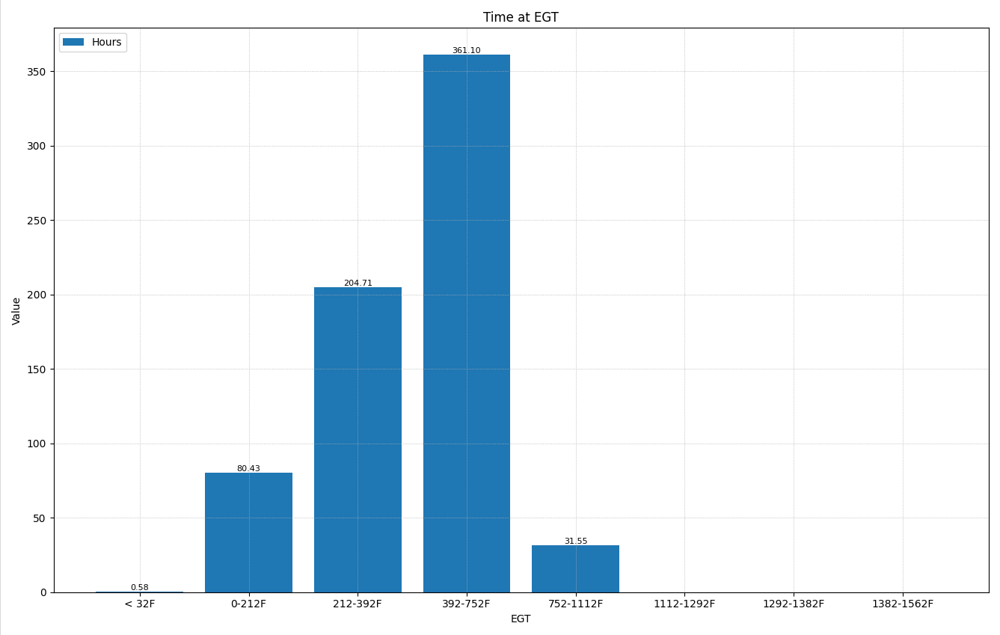

Time at EGT
PIDs Used in This Chart
| PID Name | Description | Units |
|---|---|---|
P_L_Turb_in_temp_raw |
Turbine inlet temperature (live) | °C / °F |
EUD_Turbine_in_temp_timer_nvv[0–7] |
Accumulated engine run time in each turbine inlet temperature band | Seconds |
Temperature Bands
The chart divides lifetime engine operation into eight turbine inlet temperature bands. Each bar shows how many hours the engine has accumulated in that range.
| PID Index | Range (°C) | Range (°F) | Notes |
|---|---|---|---|
[0] |
< 0°C | < 32°F | Below freezing — essentially zero in normal operation |
[1] |
0 – 100°C | 32 – 212°F | Very cold; start-up or extreme extended idle |
[2] |
100 – 200°C | 212 – 392°F | Cold; excessive idling or very light load |
[3] |
200 – 400°C | 392 – 752°F | Below normal operating range; light load or prolonged idle |
[4] |
400 – 600°C | 752 – 1,112°F | Light-to-moderate load — normal for intermittent operation |
[5] |
600 – 700°C | 1,112 – 1,292°F | Moderate load — healthy operating range |
[6] |
700 – 750°C | 1,292 – 1,382°F | High load — approaching ECU protection limit |
[7] |
750 – 850°C | 1,382 – 1,562°F | ECU limit — ECU limits torque to keep temp below 750°C; this band should be near zero |
Background
Exhaust gas temperature (EGT) at the turbine inlet is one of the most meaningful indicators of engine and aftertreatment health over the life of the machine. Unlike a snapshot of current conditions, the Time at EGT chart shows the cumulative distribution of how the engine has been used — revealing patterns of idling, light loading, and heavy operation that a single data capture cannot capture.
The sensor for this chart is the turbine inlet temperature sensor (P_L_Turb_in_temp_raw), located upstream of the turbocharger turbine. The ECU continuously monitors this value and accumulates run time into the eight bands above. These totals are stored in non-volatile memory and persist across key cycles.
Why EGT Matters for Aftertreatment
Modern Tier 4 / Stage V diesel engines rely on exhaust heat to keep the aftertreatment system working. Cold exhaust gas — the result of excessive idling or chronic light loading — is one of the most common causes of premature aftertreatment failure on compact equipment like skid steers and compact track loaders.
| Issue | Description |
|---|---|
| DPF Clogging | Passive DPF regeneration requires sustained high temperatures. Cold EGTs allow soot to accumulate, increasing regeneration frequency and eventual filter failure. |
| Wet Stacking | Unburned fuel and condensate accumulate in the exhaust when combustion temperatures are too low, causing black residue buildup and increased emissions. |
| DEF Crystallization | Insufficient exhaust temperatures at the SCR catalyst prevent proper DEF decomposition. Urea crystals can block the injector and damage the catalyst. |
| Carbon Deposits | Low combustion temperatures promote carbon buildup on injector tips, EGR passages, and the turbocharger, reducing efficiency over time. |
| Turbocharger Coking | Oil residue bakes onto turbo bearings when the turbo does not reach operating temperature consistently, leading to shaft wear and seal failure. |
| Cylinder Glazing | Chronic low-load operation at low combustion temperatures prevents piston rings from seating properly, polishing cylinder walls and degrading oil control. |
How to Use This Quick Chart
The Time at EGT chart is a static historical view — it does not animate with the Time Slider. It reflects the machine's entire operating history stored in the ECU's non-volatile memory.
The chart will display immediately as a bar graph. Each bar represents one temperature band; bar height shows accumulated engine seconds in that band.
A machine used primarily for productive work should show the tallest bars in the mid-to-upper bands (approximately 752–1,292°F / 400–700°C). Heavy concentration in the lower bands indicates excessive idling or chronic underloading.
This band should be near zero. Any significant accumulation here means the engine has been regularly reaching its thermal protection threshold, and the ECU has been actively limiting power to protect the turbocharger.
What to Look For
The majority of accumulated time falls in bands [4] through [6] — roughly 752–1,292°F (400–700°C). Some time in the lower bands is expected from cold starts and travel. Band [7] is at or near zero.
This pattern indicates the machine is being used productively under load, and the aftertreatment system is receiving adequate exhaust heat for passive DPF regeneration.
Bands [1]–[3] (below 752°F / 400°C) hold a disproportionately large share of total engine hours. This is the signature of a machine that idles frequently or operates consistently at light load — common on job sites where equipment is left running between tasks.
The ECU limits torque to hold turbine inlet temperature below 1,382°F (750°C). Meaningful accumulation in band [7] indicates the engine has repeatedly hit this thermal ceiling. This can result from overloading, blocked cooling, or conditions that drive extreme exhaust temperatures.
